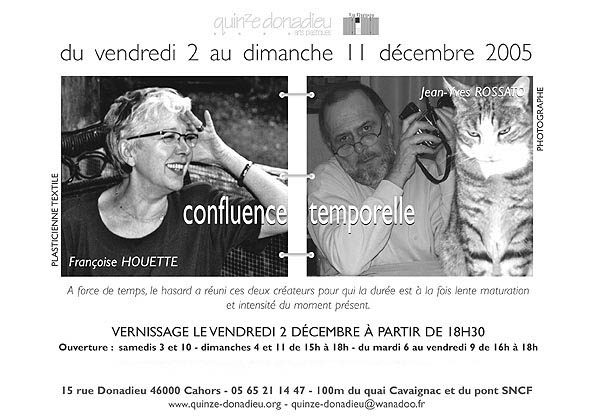

Avec cette exposition, je rends hommage à
tous ceux qui, au moins une fois dans leur vie, ont été obligés
de franchir le Cap Horn à la rame…
Jean-Yves Rossato
... alors je suis tombée dans le lin, le chanvre et la
soie et n'en suis pas sortie.
Françoise Houette
Dimanche 4 : petit déjeuner-échanges à partir 10h avec Jean-Yves ROSSATO